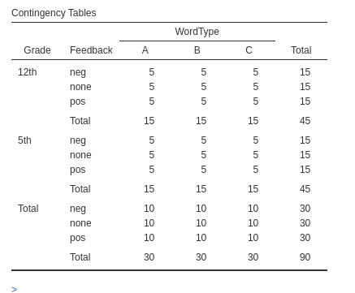
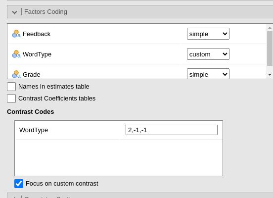
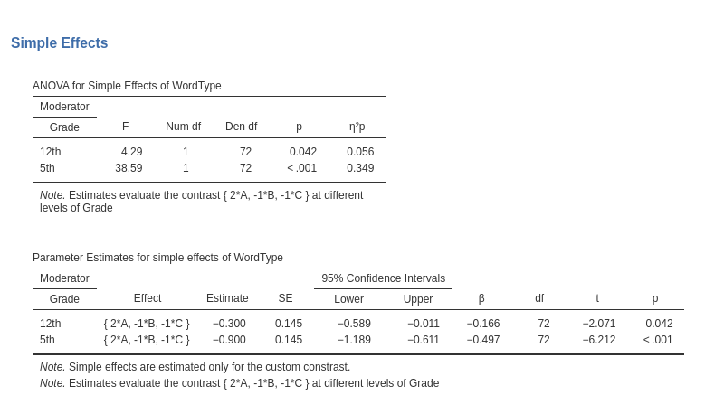
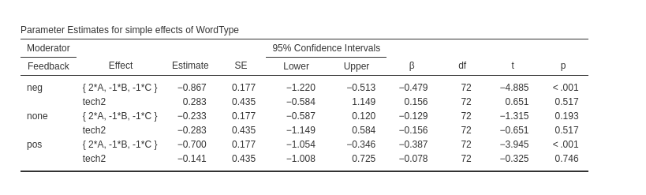
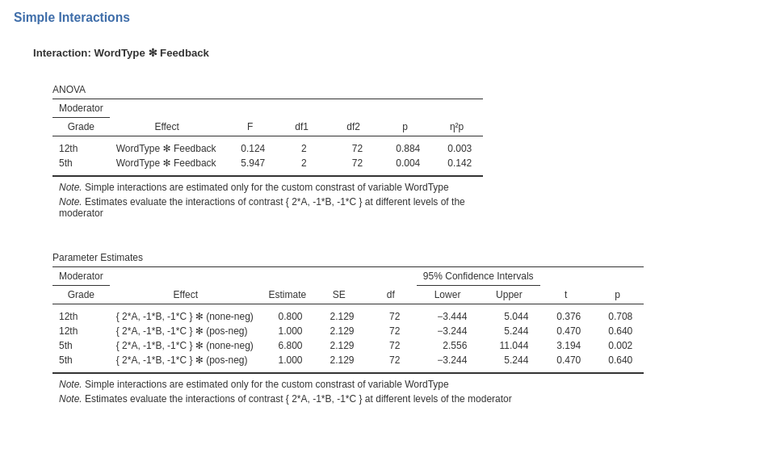

Contrasts analysis
keywords Contrasts analysis, ANOVA, linear model
3.3.2
In this page we work out an example of contrasts analysis in the GLM, using jamovi GAMLj. In GAMLj custom contrasts work in the same way for all models (generalized, mixed and generalized mixed). We use GLM here for simplicity. We employ data from Keppel and Wickens, pg 466 data set, a 3x3x2 design in keppel_3way_pg466.csv file. Some comparisons of contrasts analysis with other software can be found in Simple Effects and Simple Interactions.
The research design
The dataset has a dependent variable, number of words recalled from a memorized list. Three independent variables defined as factors 1) Grade, either fifth or twelfth graders 2) Feedback conditions: control (none), positive, or negative. WordType, that is the type of words used: A, B, C (we renamed the level for simplicity)

Running the model with the three factors and numcall as dependent variable, we obtain the following results.
Parameter Estimates table reports all tested
coefficients for the contrasts used to cast the factor variables in the
linear model. However, by default the factor are coded using
simple coding, which implying comparing the last level with
all other levels.
Custom contrast
We now wish to test the custom contrasts for WordType
comparing group A against the pooled means of group B
and C. We go to Factors Coding and we choose
custom for the variable WordType.

Upon choosing custom for a variable, a new field appears
and we can input the contrast weights we wish to test. Only one contrast
per variable can be defined, but if more contrasts are required one can
always run different analyses, one for each contrast. The coding weights
are input with the simple syntax w1,w2,w3. The order of the
weights follow the other of the factor levels in the datasheet. In our
case, the following:
We also flag the option Focus on custom contrast, which
produces a table singling out the results for the contrast (this options
has other implications, see below).
The table reports the estimate of the contrast, the Cohen’s d, t-test and p-value of the contrast.
More results can be found in the Parameter Estimates
table.
Here we see all model coefficients, including the ones associated
with the custom contrast. For instance, row
Feedback1 * WordType1 informs us on the interaction between
our contrast and the comparison none vs negative of
feedback, telling whether our contrast is different for
Feedback=none as compared with Feedback=neg. The row
wordType1 * Grade1 informs us on the interaction between
our contrast and the comparison 5th vs 12th Grade, telling
whether our contrast is different at grade 5th as compared with grade
12th.
In the table there is also a second contrast for WordType,
named tech2. That is a technical contrast necessary to
correctly estimate the model. Recall, in fact, that to cast a
categorical variable with \(K\) levels
into a linear model, we need \(K-1\)
contrasts. However, tech2 is automatically coded to be
orthogonal (uncorrelated) with our custom contrast, so custom contrast
results are completely unaffected by the technical contrasts.
We can ignore them.
Simple effects
We can further probe the results by asking for simple effects. Since
we have a significant interaction between our contrast and
Grade (see WordType1 * Grade1 above) we can probe
it.


The results of both table refer exclusively to the custom contrast.
So, the F-test in the ANOVA table tests the contrast at each level of
grade, and so does the
Parameter Estimates for simple effects table. However, if
one wants the F-tests for the whole effect of the factor, so not only
the custom contrasts, one can simply unflag the
Focus on custom contrast.
Simple interactions
Although the 3-way interaction is not statistically significant, as
an exercise we can ask for the Simple interactions

It is important to recall that in the presence of a custom contrast,
and with he Focus on custom contrast flagged, the results
pertain only to the custom contrast. Thus, the ANOVA table informs as
whether the interaction contrast X feedback is significant at grade 5th
and at grade 12th. The Parameter Estimates table breaks
down these interactions into their single contrast interactions, namely
custom * (none-neg) and custom * (pos-neg).
Unflagging Focus on custom contrast would return
standard simple interactions, involving all contrast in the model.
More custom contrasts
We can set one custom contrast per variable in the same model. Assume, for instance, we also want to test the contrast for Feedback comparing group negative against group none. Because the Feedback levels are ordered neg,none, and pos, our contrast weights should be \(c=[1,-1,0]\).
We can see in the output the results for both contrasts defined in input.
The reaming of the tables can be interpreted as we did above. The only caveat to mention is for the simple interactions. When simple interactions involve factors with custom contrast, the results pertain the interactions between the target variable custom and the other factor. Thus, setting WordType as the target variable
The parameters table show the interaction custom contrast of WordType with the other contrast of Feedback, including the custom contrast of the latter variable. The ANOVA table tests that these interactions combined per level of Grade are statistical significant.
Examples
Some worked out practical examples can be found here
Comments?
Got comments, issues or spotted a bug? Please open an issue on GAMLj at github or send me an email